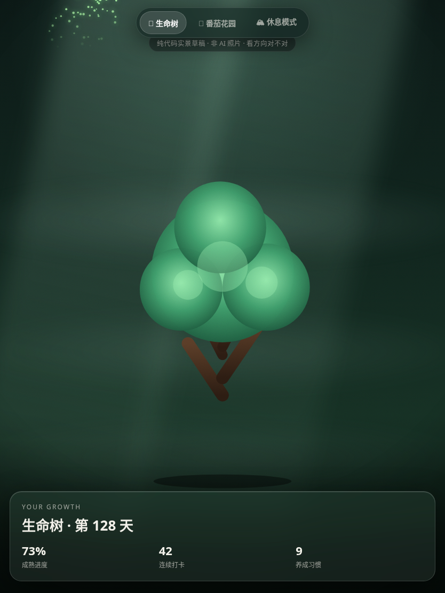
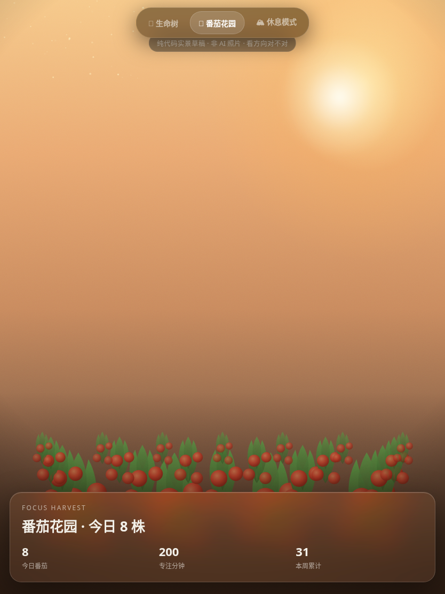
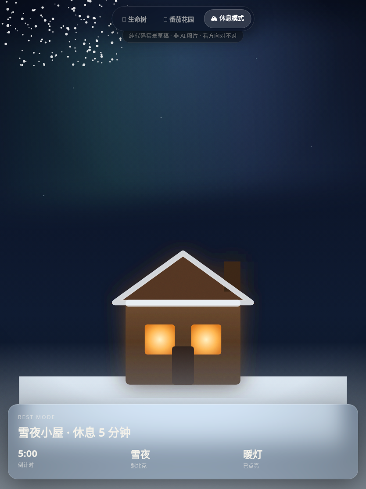

人生工作台 · 方案与进度总览
整理给扣子（Coze）的上下文 · 含产品愿景 / 已拍板方案 / 已上线成果 / 当前卡点 / 下一步
一句话定位：人生工作台 = 用户（鹿7铭）iPad 开机即进的「人生 OS」——用真实可感的世界，把效率、自律、休息焊进每一天。
壹产品愿景（用户原话提炼）
- 每天打开 iPad = 打开这个工作台，学习 / 休息 / 摘抄 / 日常（非上课、无线下任务时）全部在这里进行。
- 要覆盖日常大部分软件（排除：游戏、上网浏览、点外卖）。
- 画面要更写实（生命树、番茄花园、休息模式目前偏动画/卡通感，想偏写实）。
- 核心价值：高效生产力 App + 便捷服务 + 提高自制力 + 最重要是提效。
- 隐性刚需：粘性 / 浓厚兴趣——让用户想每天回来。写实化本质是为粘性服务。
三个英雄场景 = 每日回归引擎：🌳生命树(自律) / 🍅番茄花园(效率) / 🏔休息模式(休息恢复)。
贰已拍板的方案（关键决策）
| 决策点 | 决定 | 理由 |
|---|
| 视觉路线 | 玻璃浮层 + 写实背景（路线A） | 不做3D；visionOS同款语言，统一且稳 |
| 文件策略 | 单 HTML + Service Worker 缓存图片 | 已有SW，图片缓存离线，HTML不膨胀 |
| 主调场景 | 休息模式·雪夜木屋先做到位 | 三张里最像样、最戳"回归感"、单照即写实、风险最低 |
| 写实素材 | CSS实景先当v1，背景层预留换真照片接口 | 沙箱调不通AI图，但不阻塞 |
| 落地顺序 | iPad试→反馈最戳→接主站→补另两→全站玻璃化→补缺口模块 | 先验证方向再投入 |
叁已做完并上线 ✅
本轮新增 6 大模块（2026-07-30 提交 209b744，已推 GitHub Pages）：
- 📅 年回顾（yearreview）— 10张统计卡+年份切换+历史上今天+JSON导出
- 🔥 习惯热力图（heatmap）— 53×7格、5级权重着色、年导航
- 🌱 番茄花园（tomgarden）— SVG花园、自动统计真实番茄数、手动种植
- 🔁 间隔复习（spaced）— 自动抓备忘/摘抄/笔记成卡、Leitner 5箱
- 🔔 提醒中心+健康提醒（remind）— 一次/每日/周期提醒、水/站立/护眼、接入通知引擎
- 🕸 模块联动图谱（graph）— 27节点环形、11条静态联动、动态按数据量高亮
数据导入/恢复经核查本就存在，已用真实文件导入验证 3/3 通过。
📎 主站：https://lu7ming.github.io/-7-/life.html
肆写实概念验证（已部署，可 iPad 切换试用）
因沙箱调不通 AI 图像 API（Google 返回 API_KEY_INVALID），先用纯 CSS/SVG 把"写实感"推到代码极限，做出三场景可切换概念原型，用于判断方向。

🌳 生命树

🍅 番茄花园

🏔 休息模式
📎 概念原型：https://lu7ming.github.io/-7-/concept_realistic.html（点顶部胶囊切换三场景）
诚实评估：纯 CSS 写实天花板明显（休息模式⭐⭐⭐⭐、花园⭐⭐⭐、树⭐⭐⭐），要到照片级必须换 AI 真照片。
伍当前卡点 ⏳
- 卡点1 AI 写实图像生成：沙箱无有效 OpenAI/Gemini key，无法出真照片背景。需要用户提供一份 API key（设成环境变量）即可解锁。
- 卡点2 导航交互：用户反馈"不想折叠侧栏、要常驻直切"。已讨论改底部 Tab 栏/侧栏常驻/顶部滑动条，待用户确认布局后改。
- 卡点3 概念转正：等用户 iPad 试用反馈（哪个场景最戳 + 玻璃+写实路子对不对），再把选定场景接进主站。
陆下一步流程
- 用户在 iPad 试概念原型 1–2 天 → 反馈①哪个场景最戳 ②玻璃+写实路子对不对
- 若给 API key → 换 AI 真照片背景；否则按 CSS v1 继续
- 把选定英雄场景 + 玻璃 UI 接进
life.html 主站
- 补齐另两个英雄场景
- 全站 UI 玻璃化统一语言
- 补缺口模块（按优先级：①密码/账号保险库 ②购物&收纳清单 ③本地音乐播放器 ④身体数据追踪）
- 导航改常驻（Tab/侧栏/滑动条，待定）
柒给扣子的背景（决策上下文）
这是一个运行在 GitHub Pages 的单文件 HTML PWA（life.html，约 9000 行，无框架，IIFE 封装，localStorage + IndexedDB 持久化，Service Worker 离线）。当前 28+ 模块已覆盖任务/笔记/课程/项目/记账/打卡/番茄钟/书摘/健康提醒/联系人/目标OKR/思考流/胶囊/周计划/复盘/闹钟/白噪音/冥想/生命树/番茄花园/年回顾/热力图/间隔复习/图谱/天气/日历/搜索等。
待扣子/用户拍板的开放问题：①写实背景用 AI 真照片还是继续 CSS；②导航布局选哪种；③缺口模块优先级。我（WorkBuddy）已就前两点给出明确推荐（真照片+底部Tab栏），最终以用户在扣子的讨论结论为准。
单文件PWAiPad优先写实化=粘性效率+自律+休息